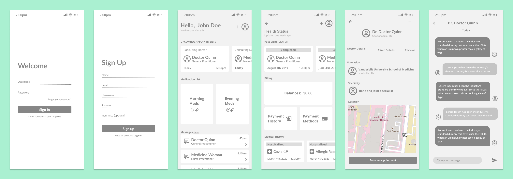

This app will help countless numbers of families and individuals who need a faster, and more seamless way to connect with providers. They need a direct line of communication to give updates, and to prevent the expensive shortcomings that stem from inaccurate information. This app will allow patients and their providers to have an accurate log of medical history, visits, medications, and the expenses that accompany those items. By having an accessible record that can easily be updated and corrected, passing the right information has never been easier.
Anyone can pick up the phone and dial a random provider, but is that provider in the right insurance network? Are they available when you need them to be? Do these providers have reviews that give social proof and confidence that patients are making the right decision.
Getting healthcare, let only the right kind of healthcare, is harder than ever. In order to empathize with different types of users, we created personas to make sure the product is solving actual pain points.
The first solution this app brings is giving patients a direct line to
provider’s details and availability. Having this readily available,
there’s no need for phones ringing off the hook or long hold times
only to find out the wrong number was dialed. A calendar view of
available time slots allows the user to click the desired slot, which
then lets them book an appointment instantly.
The other major frustration this app solves is keeping the patient and
provider on the same page, through a secure messaging system where
updates and corrections are delivered swiftly. There are many cases
where patients forget to give details until they get home, or
misinformation is passed into a patient’s chart. These inaccuracies
cause unnecessary visits and wasted payments. By having a way for both
parties to make corrections, regular tasks become less task consuming.
The goal of this site map is to serve as simple and intuitive guide of the application's content structure. Based on our target audience and our content we made educated assumptions on the best way to navigate through this app
These high fidelity wireframes give a great perspective on the layout details of the app. These layouts takes into account the user journey and site maps.
The style guide for this project is based on cleaness, readibility, and intuitiveness. The typography and color scheme is meant to convey the feelings of nurturing, trust, and calmness.
Lato
Open Sans
After gaining more data and insight on how users react to the early stages on the app, it's time to bring out the final product. These high fidelity mockups take into account everything that's been done so far.
The purpose of the app is to provide a solution to the painful process of connecting with the right healthcare providers and preventing the mishaps that come with having one. This project was a fun challenge that I plan on improving further. The next steps will be to research and solve the issues that insurance plays in the process.
Thank you for checking out my case study!